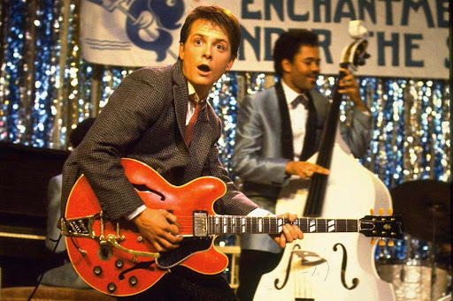

Sobre mí

Nacido el 19 de junio de 1968 en Hill Valley, California. Más conocido como Marty McFly.
Más información:
- Dirección:
- Nº36 de Lyon States, Hill Valley
- Teléfono:
- +1 974 32 58 29
- Carné de conducir:
- B1, DeLorean volador
- Estado civil:
- Casado (en el futuro)
Trayectoria profesional
- Vocalista y guitarrista del grupo de rock Los Pinheads en 1985. Tocamos en fiestas, comuniones, bodas y otros tipos de eventos.
- En 1955 formé parte de la orquesta Berry (click para el video).
- Repartidor de periódicos.
Datos de interés
- Estudiante especializado en la historia del condado de Hill Valley desde el Salvaje Oeste hasta la actualidad.
- Título de socorrismo.
- Idiomas: Inglés (nativo), B1 de español.
Aficiones
- Skateboarder
- Músico
- Cámara
- Viajero del tiempo
